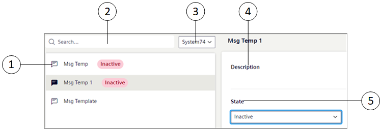

Notification Templates
This section provides reference and background information for handling notification templates in the Flex Client Notification. For related procedures, see the step-by-step section.

Item | Name | Description |
1 | Notification Template List | Displays the existing list of notification templates with their state from the installed client |
2 | Search | Search for a particular template or templates either from the name or state. |
3 | System drop-down list | Displays the Templates for the particular system. NOTE: In the case of the distributed system environment, to view the Notification template of each system select the system from the System drop-down list. |
4 | Description | Displays the description of the message template configured in the installed client. |
5 | State | Allows you to select the current state to of the message template.
|